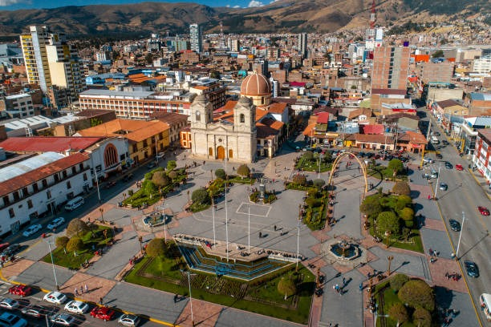

Bienvenido a Huancayo
Explora la magia de los Andes. Vive su historia, cultura, paisajes y deliciosa gastronomía en una ciudad vibrante.
Destinos turísticos
Laguna de Paca - Jauja(Por peticion de mattias)
Ideal para paseos en bote y disfrutar la tranquilidad andina(Vuelvo a recalcar, es de JAUJA, no huancayo)
Torre Torre
Formaciones geológicas únicas perfectas para caminatas y fotos.
Convento de Ocopa
Un monasterio histórico con biblioteca y museo colonial.
Gastronomía típica
Pachamanca
Cocida bajo tierra con piedras calientes, una tradición ancestral.
Cuy Chactado
Plato típico preparado con cuy frito, ajíes y papas doradas.
Papa a la Huancaina
Consiste en papas sancochadas (hervidas) cubiertas con una cremosa salsa a base de queso fresco, ají amarillo, leche y galletas o pan.
Conócenos
Somos un grupo de estudiantes apasionados por la cultura de Huancayo y comprometidos con dar a conocer sus riquezas turísticas y gastronómicas a través de un sitio web accesible y educativo.